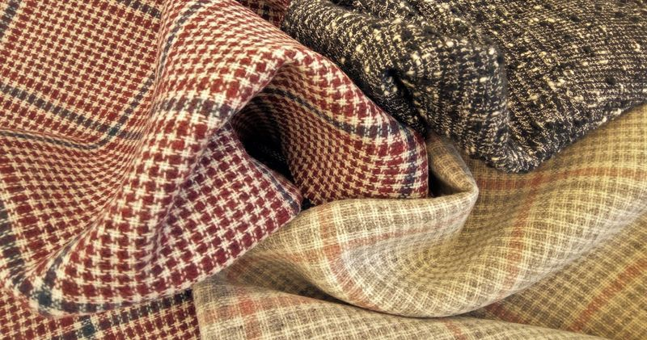
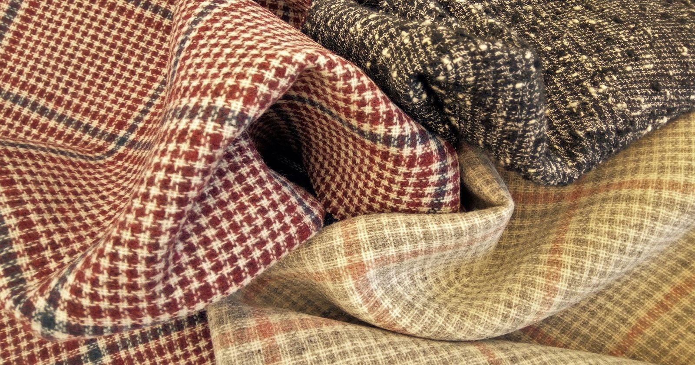
La nostra gamma di prodotti
I nostri prodotti
Tessuti di lana per l’industria dell’abbigliamento, tessuti per arredamento da interni ed esterni, tessuti tecnici e filati cardati e pettinati.
13 famiglie di tessuti
La nostra gamma di prodottiLa nostra gamma
La nostra gamma di prodotti
Produciamo praticamente ogni tipo di tessuto di lana per l’industria dell’abbigliamento, tessuti per arredamento da interni ed esterni, tessuti tecnici, filati cardati e pettinati, così come misti speciali con cotone, poliestere, seta, cashmere, pelo di cammello e diverse materie sintetiche.
Inoltre, la nostra produzione comprende tessuti di lana leggerissimi, da 130 g/m² fino a 600 g/m², tutti fabbricati secondo un sofisticato sistema di controllo della qualità.
- Tessuto pettinato, da
- 130 g/m²
- Tessuto cardato, fino a
- 600 g/m²
- Famiglie di prodotto
- 13
Fibre
Lana
Cotone
Lino
Seta
Cashmere
Pelo di cammello
Poliestere
Viscosa
Nylon
Fibre aramidiche
Produciamo praticamente ogni tipo di tessuto di lana.
Famiglie
Famiglie di tessuti
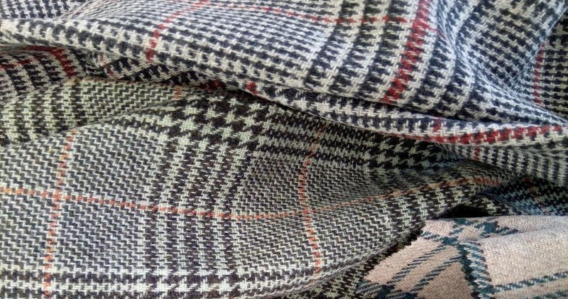
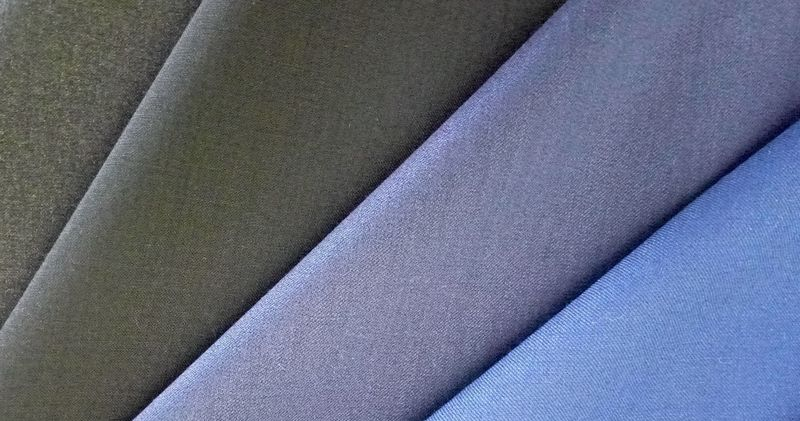

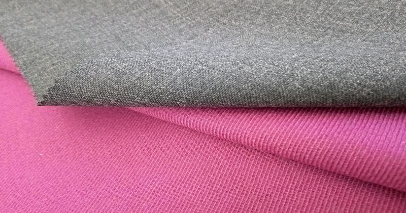

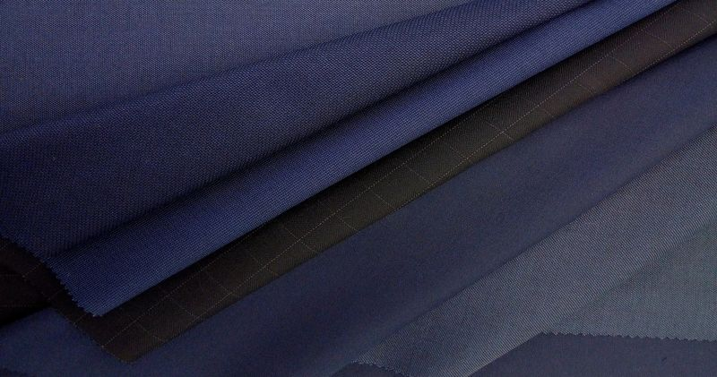
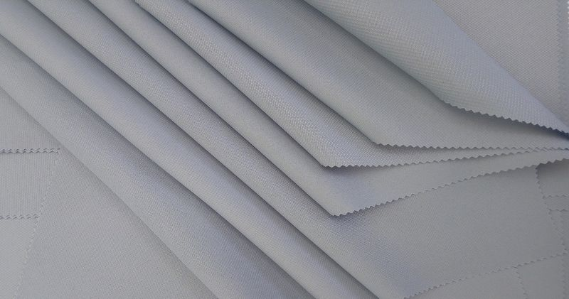
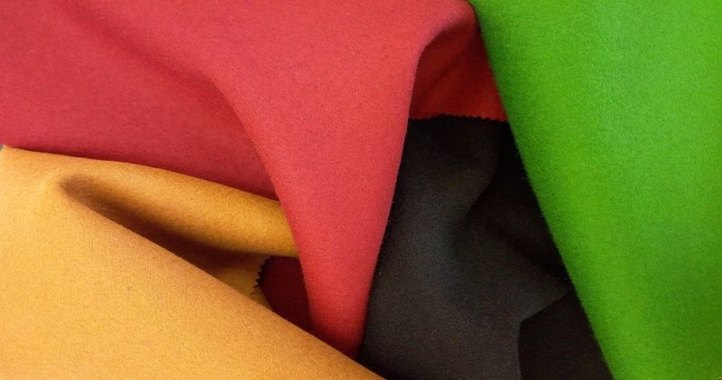
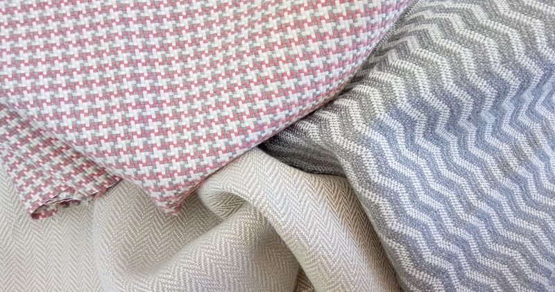
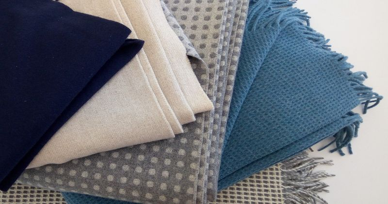
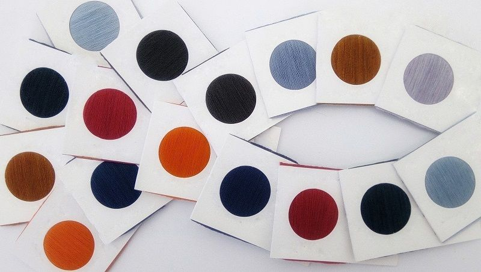
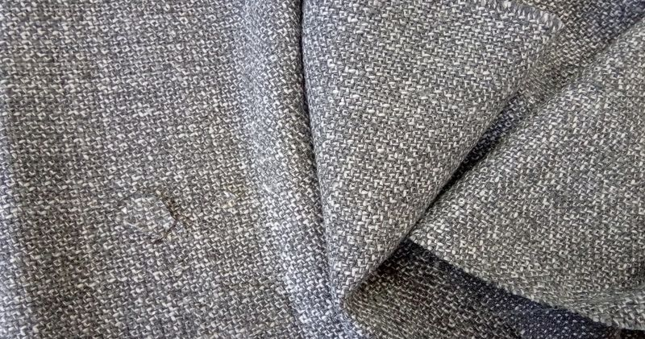
Produzione
Produzione
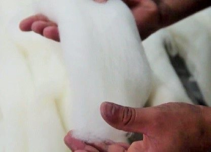
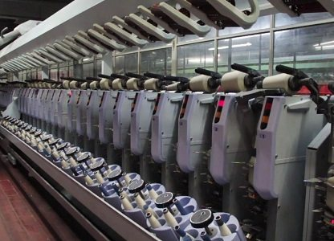
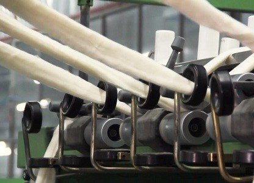
Contatti
Novalan, S.A. de C.V.
Indirizzo
Carr. Tulancingo-Huapalcalco #1510Col. Caltengo
Tulancingo, Hidalgo. México
C.P.: 43626
- Telefono
-
(52) 775-755-11-23
(52) 775-753-03-89 - info@novalanfabrics.com.mx